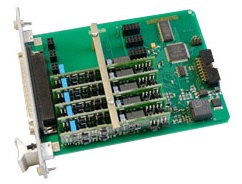
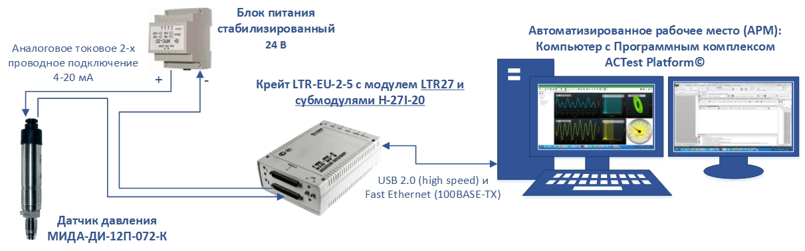
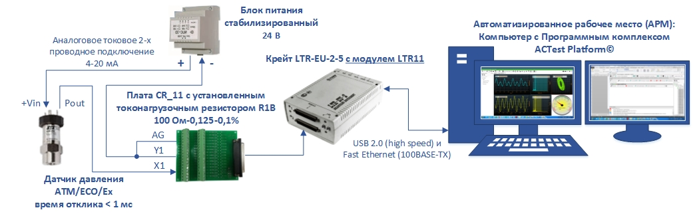
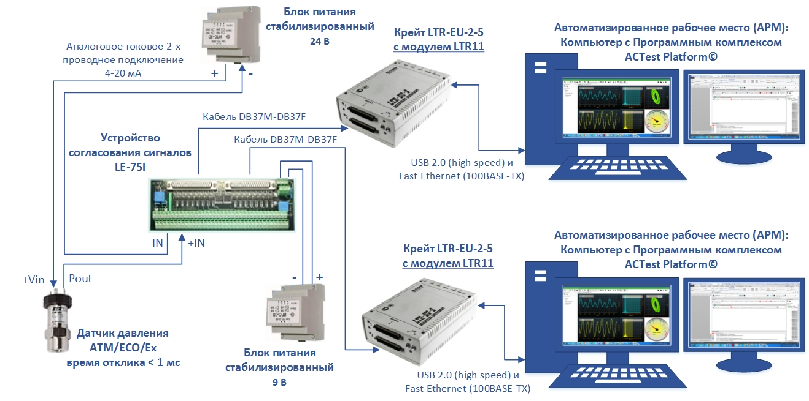
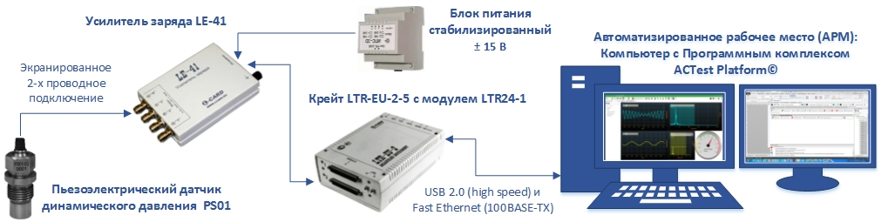
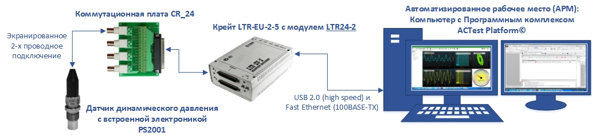
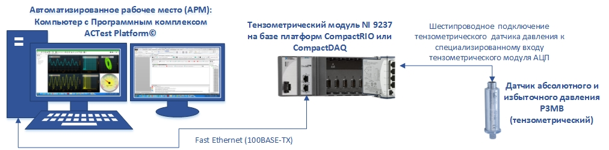

Теперь рассмотрим пример измерения статодинамического давления - подключение датчика давления ATM/ECO/Ex, с временем отклика < 1 мс. Это датчик абсолютного давления, производства швейцарской компании Trafag Sensors & Controls. Эксклюзивным представителем щвейцарского завода Trafag Sensors & Controls в России и СНГ является компания “Полтраф”. Датчик давления в искробезопасном исполнении ATM/ECO/Ex имеет аналоговый токовый выход 4-20 мА (2-х проводное подключение). Подключение токового сигнала датчика давления производится к относительно недорогому универсальному модулю АЦП LTR11, производства компании “Л Кард”, с использованием платы согласования и подключения сигналов CR_11, на которую дополнительно устанавливается прецизионный токонагрузочный резистор.
А так же есть дублированное подключение датчиков давления – подключение датчиков давления одновременно к двум регистраторам сигналов (двум платам или модулям АЦП) применяется в измерительных системах повышенной надежности, в системах автоматизации сложных или опасных технологических процессов, дорогостоящих и ответственных экспериментов и испытаний. В связи с тем, что дублированное подключение практически удваивает число измерительных каналов, основным требованием, предъявляемым к таким многоканальным системам измерения, является применение относительно недорогих и одновременно надежных и помехоустойчивых схемотехнических решений с относительно небольшой стоимостью в расчете на один измерительный канал. Решений, исключающих какое-либо взаимовлияние дублированных измерительных каналов друг на друга во всевозможных режимах работы основного и дублирующего измерительного оборудования.
Для измерения пульсаций и перепадов давления, для измерения быстропеременных процессов в диапазоне частот от единиц Гц до сотен кГц, применяются пьезоэлектрические датчики давления, рассмотрим варианты их применения на примере подключения датчиков динамического давления компаний “ГлобалТест” и РСВ Piezotronic. Пьезоэлектрические датчики давления без встроенной электроники и выходом по заряду, например датчики динамического давления PS01, PS01-01, PS01-02, PS01-03; Это относительно недорогие датчики, но для их подключения к дифференциальным входам АЦП необходимо дополнительно использовать промежуточные согласующие усилители – Усилители заряда, например усилитель заряда LE-41 производства компании “Л Кард”, и внешние, стабилизированные, биполярные источники питания для этого усилителя;
Пьезоэлектрические датчики давления со встроенной электроникой и двухпроводным подключением, это ICP датчики или двухпроводные TEDS-датчики с встроенными предусилителями, согласно стандарту IEEE 1451.4 (Class 1 MMI), когда по двум проводам одновременно подается питание датчика и снимается значение измеряемого параметра, например подключение ICP датчика динамического давления 106B50 компании РСВ Piezotronic, к специализированным ICP входам модуля LTR24-2 производства компании “Л Кард”.
Отдельно стоит рассмотреть тензометрические датчики давления без встроенной электроники. Упругий преобразователь такого тензометрического датчика давления состоит из мембраны, на поверхность которой наносится тензоизмерительный элемент. Как правило, это мостовая тензорезистивная схема измерения с температурной компенсацией и четырехпроводной коммутационной частью для прямого подключения к специализированным тензометрическим модулям АЦП. Пример подключения тензометрического датчика давления P3MB производства компании Hottinger Baldwin Messtechnik GmbH, Германия (HBM) к специализированному тензометрическому модулю АЦП NI 9237 на базе платформ CompactRIO или CompactDAQ производства компании National Instruments, США.
Тензометрический модуль АЦП NI 9237 на базе платформ CompactRIO или CompactDAQ, производства компании National Instruments, имеет 4 параллельных специализированный каналов АЦП для прямого подключения мостовых, полумостовых, а со специальным переходником и четвертьмостовых тензодатчиков или, например, подключения тензометрических датчиков давления. Для подключения тензометрических датчиков давления можно также применять: - Тензометрические модули АЦП LTR212M-1 и LTR212M-2, крейтовой системы LTR производства компании “Л Кард”, для работы в режиме статодинамика с полосой регистрируемых процессов от 0 до 2 кГц; - Тензометрические модули АЦП ML10B, ML55B и ML55BS6, крейтовой системы MGCplus производства компании Hottinger Baldwin Messtechnik GmbH, Германия (HBM), для работы в режиме стато-динамика с полосой регистрируемых процессов от 0 до 3 кГц. Программное обеспечение измерительных систем Основной составной частью создаваемых автоматизированных систем, которая из набора коммуникационного и измерительного оборудования формирует именно автоматизированную систему или информационно-измерительную часть этой системы автоматизации, является Программный комплекс ACTest Platform© - новый программный продукт компании “Лаборатория автоматизированных систем (АС)”. Программный комплекс ACTest Platform© предназначен для автоматизации работ на исследовательских, испытательных, технологических и контрольно-диагностических установках. Комплекс функционирует на РС-совместимом компьютере, оснащенном средствами сбора данных. Программный комплекс ACTest Platform© поставляется в виде нескольких модификаций, предназначенных для создания различных систем автоматизации измерений от портативных и переносных, до распределенных и многоуровневых.